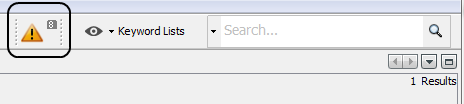
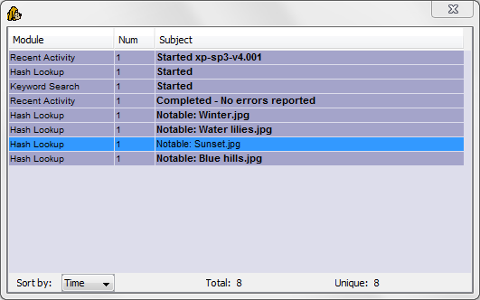

The ingest message inbox is used by Autopsy to provide real-time updates during ingest. To open the inbox, click on the yellow warning sign in the top/right corner of the Autopsy window. The sign can display a number of incoming unread (not yet clicked) messages during ingest in its upper-right corner.

Ingest modules are able to post messages when notable events occur, such as a keyword or hash database hit. If a module posts many similar messages in a short time span, the inbox will group those messages so that unique updates are not lost among the noise.
The grouped messages are colored with different shades to indicate their importance; if a message group contains a lower number of unique messages, it is potentially more important than another group with a large number of unique messages. The more unique important messages have a lighter background color.
The ingest messages can be sorted by uniqueness/importance, or by chronological order in which they had appeared.
A message can be clicked to view the message details. When a message is clicked, it is marked as "read". When updates are posted with regard to a specific result or file, the message is linked to that file and the buttons in the top/right corner of the message details view can be used to browse to that data.
